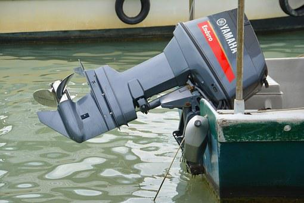

About 70% of the earth is covered by water. It appeared to be that there couldn’t be a method for facing the anger of the ocean when it becomes angry. However, things have changed; the ocean is viewed as one of the main courses of transportation for merchandise and stuff. Nautical Engineering is a part of engineering which has the discipline of managing the plan, development and fix of marine vehicles. They include the advancement, exploration, application, and understanding of research plan; improvement of marine vehicles, and computation of all phases of life of a marine vehicle. Planning a boat or marine vehicle requires lots of work, and the people who study Nautical Engineering in Germany are capable of it. The vehicle should be evaluated based on the Preliminary plan of the vessel, detailed plan, development, maintenance, activity, support, launching, and dry-docking are the principal activities included.
Now and again when the boat goes old or has any damage, there should be work on it. The ship plan and computation should be finished so the ship can be regenerated. The computation is done based on transformation, modifying, modernization, or fixing. Then, at that point, there is work on the definition of security standards and rules, damage control rules, and the approval and certificate of ship plan to meet such legal and non-legal necessities are remembered. Both Marine Engineering and Nautical Engineering are related to the delivery business. If your advantage is to turn into a specialist go for marine engineering however to choose Captain Post, concentrate on Nautical Engineering in Germany. Both will bring an equivalent level of the job opportunity.
Nautical engineering’s fundamental work environment is shipyards where they work on the improvement of different ships and their specialized plan areas as well as filling in as functional and assembling engineers. The people who concentrate on Nautical Engineering in Germany can work in the cost estimation and sales department. There are many open doors in organizations providing fixtures and fittings for ships, in arrangement offices, in marine/nautical engineering and hydro-engineering testing institutes, and in private or independent designing workplaces. They are broadly liable for the testing and checking work of acquirement of ships, fixtures, and fittings.